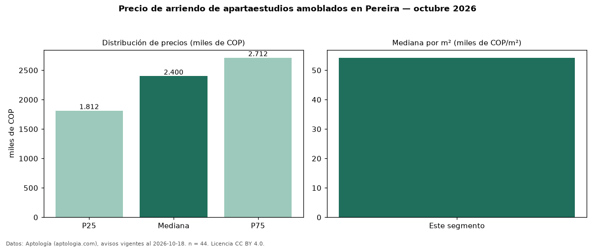

Precio de arriendo de apartaestudios amoblados en Pereira — octubre 2026
En Pereira, la mediana de canon mensual de apartaestudios amoblados es COP 2,40 millones, según 44 avisos vigentes. Eso es 26 % más que la mediana de todos los apartaestudios en arriendo de Pereira (COP 1,90 millones, n = 221); este segmento reúne el 20 % de esos avisos. Por metro cuadrado, la mediana es COP 54.250/m² al mes (n = 44), 29 % por encima del conjunto de referencia (COP 42.078/m²). El área mediana anunciada es 40 m². La administración mediana declarada es COP 290.000 al mes (n = 21), aparte del canon. El estrato más frecuente es 6 (57 % de los avisos con estrato). 86 % de los avisos con el dato declara parqueadero. La mitad central de los avisos va de COP 1,81 millones a COP 2,71 millones (razón 1,5), una dispersión moderada. Datos: Aptología (aptologia.com), CC BY 4.0 — https://www.aptologia.com/arriendo/pereira. Archivos: PDF, CSV con las cifras y gráfica PNG.

| Avisos únicos | 44 |
|---|---|
| Percentil 25 | COP 1.812.500 |
| Mediana | COP 2.400.000 |
| Percentil 75 | COP 2.712.500 |
| Mediana por m² | COP 54.250 |
Fuente: avisos vigentes de portales inmobiliarios recopilados por Aptología, deduplicados (mínimo 30 avisos únicos por celda). Precios pedidos, no cerrados. Fecha: 2026-10-18.